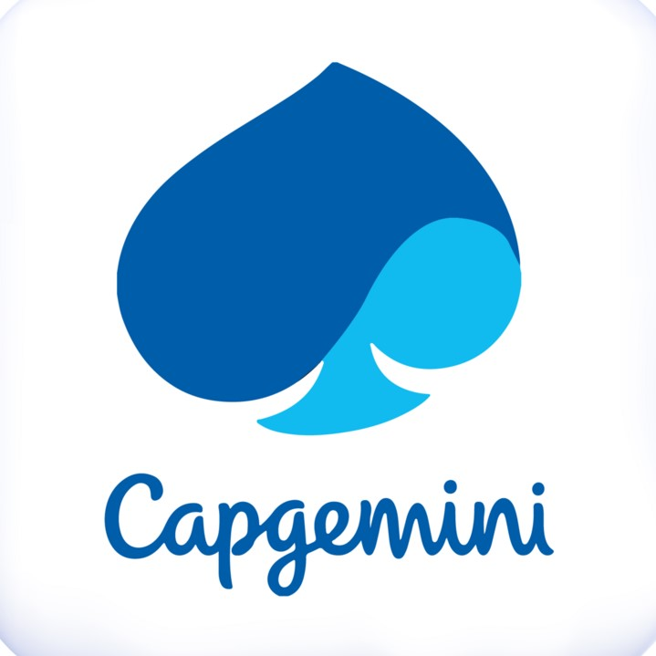
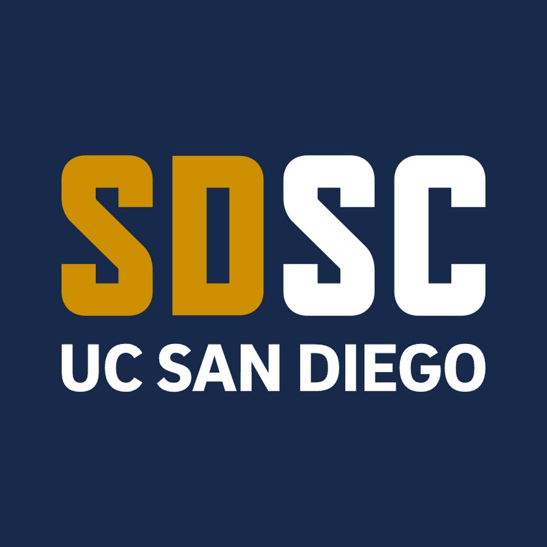
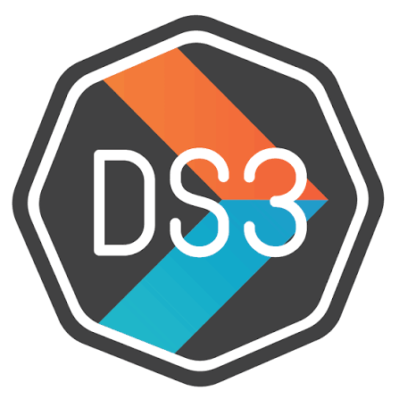
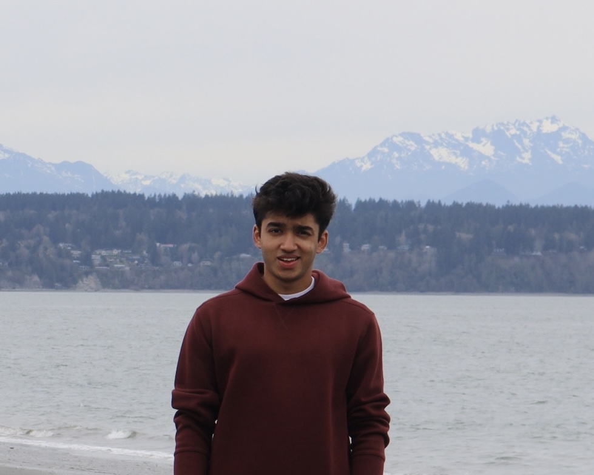

Hi, I'm Dylan.
I'm an undergraduate data science student at UC San Diego, inspired by the natural world and how we interpret it through data. My work focuses on the intersection of science, storytelling, and computation, and I find myself particularly drawn to patterns in nature.
I tend to gravitate toward problems that sound interesting to me and spark my curiosity, which is why most of my projects are centered around real-world applications.
When I'm not immersed in datasets, you'll often find me hiking or running. Otherwise, expect to see me baking, behind a camera, or winning a game of Catan (very rarely, admittedly).
Education
B.S. in Data Science
Expected Mar 2027
University of California San Diego
International Baccalaureate Diploma (IB)
Apr 2019 – Jun 2024
Dhirubhai Ambani International School
Experience
Instructional Assistant
Sep 2026 – Present
Halıcıoğlu Data Science Institute
VP of Internal Relations
Oct 2025 – Present
Peaks and Professors at UCSD

Data Engineer Intern
Jul 2026 – Aug 2026
Capgemini

Data Science Instructor
Apr 2026 – Jun 2026
San Diego Supercomputer Center
AI Engineer
Oct 2025 – Jun 2026
Computer Science & Engineering Society at UCSD

Data Journalist
Oct 2024 – Jun 2026
Data Science Student Society at UCSD
Machine Learning Engineer
Oct 2025 – May 2026
Engineers for Exploration (Qualcomm Institute)
Data Analyst
May 2025 – May 2026
Scripps Institution of Oceanography
Quantitative Analyst
Oct 2025 – Dec 2025
Sustainable Investment Group at UCSD
Market Research Intern
Jul 2023 – Aug 2023
Bennett Coleman & Co. Ltd. (The Times Group)

Discovery Park, WA — 2026